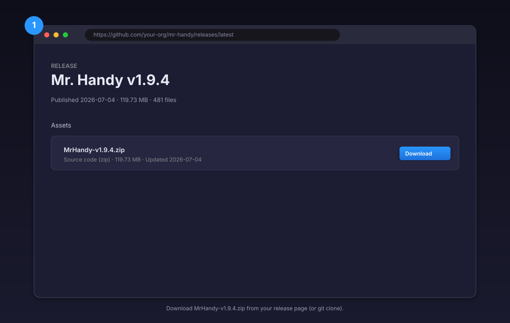
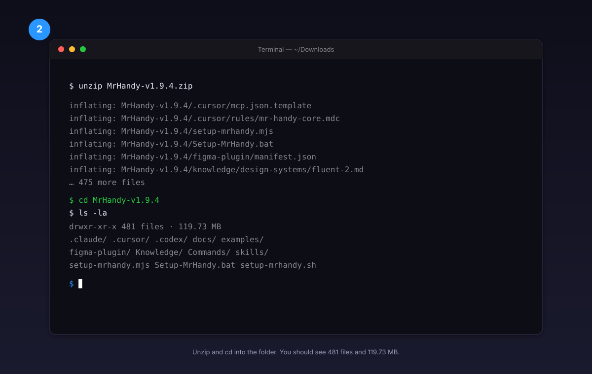
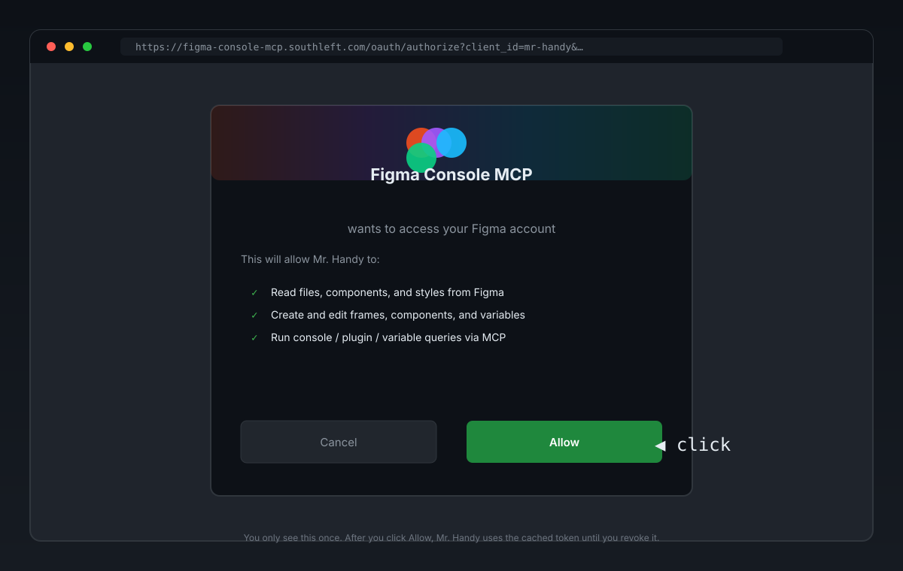
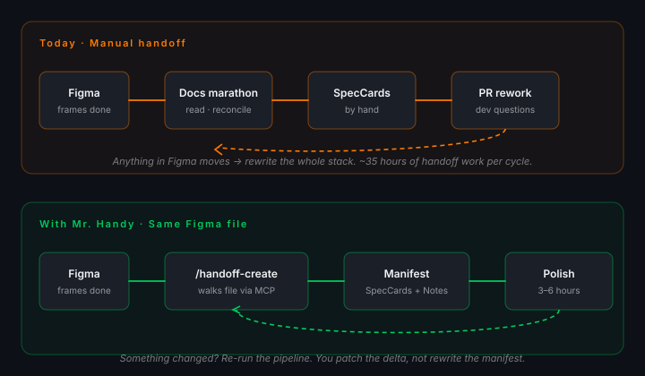

Design handoff, automated.
Design polish, still human.
A documentation specialist for Cursor, Claude Code, Codex, Windsurf, Zed, Cline, and Continue that turns your finished Figma file into a structured manifest your dev team can read — SpecCards, Notes, coverage matrix, tokens, accessibility, and an Apple-keynote deck if you want one.
From zip to first handoff in seven steps
Silent auto-setup, placeholders are valid, zero readline prompts. The only manual work is one browser sign-in (Figma + Atlassian use OAuth) and one plugin import (the uSpec Extract plugin, only needed for /handoff-component).
Download the bundle
~30sGrab MrHandy-v1.9.4.zip from your release page — 481 files, 119.73 MB. The zip bundles the wizard, rules, agents, skills, vendored Figma Console MCP, and the uSpec extractor plugin. No git clone required.

Unzip the bundle
~10sUnzip into any folder, then cd into it. The folder becomes a self-contained project — Mr. Handy is folder-agnostic, you can drop it inside an existing repo or keep it standalone.

$ cd MrHandy-v1.9.4
$ # 481 files · 119.73 MB · ready
Run the silent auto-setup wizard
~3 minDouble-click the wrapper (or run it from a terminal). The wizard probes Node ≥ 18, populates mr-handy.config.json, asks one y/N question for the optional Atlassian MCP, detects all 7 IDEs, writes the right mcp.json to each (Figma + Atlassian use OAuth, no PAT), builds the uSpec extractor, and prints a 3-step "to finish" checklist (browser sign-in, plugin import for /handoff-component, IDE restart). Zero readline activity — placeholders are valid.

> Setup-MrHandy.bat
# macOS / Linux / WSL:
$ chmod +x setup-mrhandy.sh
$ ./setup-mrhandy.sh
Sign in to Figma and Atlassian (OAuth)
~30sNo PAT, no email, no API token — the wizard wrote OAuth endpoints into every mcp.json. The IDE opens a browser the first time it calls Figma and Atlassian. Sign in once; tokens are cached afterwards.

https://figma-console-mcp.southleft.com
# Atlassian (opt-in) opens:
https://mcp.atlassian.com
No local Figma plugin to import
0sThe previous release required a hand-imported "Figma Desktop Bridge" plugin to bridge the Console MCP into Figma Desktop. With the switch to OAuth / Remote SSE, that plugin is no longer needed — skip this step. (You'll still import the uSpec Extract plugin later, in Step 9 — that's a separate, vendored plugin used only by the per-component path.)
Open Mr. Handy in Cursor
~10sRestart Cursor, open the Mr. Handy folder. Rules under .cursor/rules/ auto-load (13 rules · 8 agents · 7 commands), the MCP servers boot from .cursor/mcp.json, and the sidebar shows the file tree. Paste a Figma URL in the chat.
Get the handoff back
~3 minMr. Handy greets you (Plan mode), confirms scope, runs Flow Mapping, spawns parallel screen analyzers, builds the Scenario Coverage Matrix, and emits the artifacts. Output: Handoff-{Flow}.md + Handoff-{Flow}.html + screenshots/ + scenario-coverage.md. Mode B writes the SpecCards to a Figma canvas page instead.
What it is
Mr. Handy walks your finished Figma file and produces the documentation manifest your dev team would otherwise build by hand. It does not design. It does not write code. It reads Figma like a senior designer, writes the docs the way a senior designer would, and turns "one small change" into "re-run the pipeline and patch the delta" — instead of a four-hour rewrite.
mr-handy.config.json at runtime. Any company, any design system — one config swap.
The workflow — before and after
The top track is what happens today after screens ship in Figma. The bottom track is what Mr. Handy does from the same file. The only difference is the loop at the end: one full rewrite, or a 5-minute delta run.

What it produces
Handoff-{Flow}.md + .html + screenshots. Or a Figma canvas page with SpecCards placed beside the frames. Drop into the project repo, link from the PR, hand to new devs.
components/{slug}.md with anatomy, API, color tokens, structure, screen-reader focus order, motion. A single source-of-truth file you can hand to any LLM.
Apple-keynote-style deck generated from the handoff: title card, pullquote, context, capability tour, stats grid, closing CTA. Brand palette auto-bound. PDF + PPTX export.
The tool stack
Nothing exotic. The same four tools the modern design-dev handoff already runs on.
Who uses it
Mr. Handy fits any team that does design handoff. The config is the only thing that changes.
One design system, one Figma org, one brand. Set up once, run on every feature. New hires onboard by reading the most recent handoff.
Multiple client Figma orgs, one shared Mr. Handy install. Swap the library key and brand palette per engagement, keep the pipeline identical.
The per-component track is the entire reason this tool exists. Anatomy, API, color, structure, a11y, motion — one self-contained .md per component, ready for the public docs site.
Prerequisites
Your team designs in Figma. The whole point of Mr. Handy is to read the file as-is.
The agent host. The setup wizard detects which ones you have and writes the right mcp.json shape for each.
Figma is always required; Atlassian is opt-in. The wizard writes the OAuth MCP endpoints into every IDE's mcp.json; the browser opens to figma-console-mcp.southleft.com and mcp.atlassian.com on first use, you click Allow, and the tokens are cached. No PAT, no email, no API token to paste.
The uSpec Extract plugin (for /handoff-component) is desktop-only. Web Figma is not enough.
Needed to build the uSpec extractor plugin and export SlideV decks.
Install
Unzip the Mr. Handy bundle into any folder, or copy the folder into your project, then run the setup wizard. About five minutes start-to-finish.
# From a zip:
unzip MrHandy-v1.10.zip
cd MrHandy-v1.10
# Or, if you cloned:
git clone <repo-url> mr-handy
cd mr-handy
# Windows
Setup-MrHandy.bat
# macOS / Linux / WSL
chmod +x setup-mrhandy.sh
./setup-mrhandy.sh
# Direct (any platform)
node setup-mrhandy.mjsThe wrapper runs silently by default — no readline prompts, placeholders are valid, re-runs are idempotent. The wizard:
- Probes Node ≥ 18 and reports the version.
- Loads
.env(if present) and merges intoprocess.env. Precedence: env > .env > saved config > placeholder. - Populates
mr-handy.config.jsonsilently under--auto. - Asks a single y/N question for the optional Atlassian MCP (Jira + Confluence).
- Detects which IDEs you have installed (Cursor, Claude Code, Codex, Windsurf, Zed, Cline, Continue) and writes the right
mcp.jsonshape to each. Figma and Atlassian use OAuth — no PAT, no email, no API token is ever asked for. - Builds
figma-plugin/(the uSpec extractor). - Prints a "to finish" checklist with the OAuth browser sign-in, the uSpec plugin import (only needed for
/handoff-component), and the IDE restart steps.
For an interactive run (walks the full menu):
# Windows
SETUP_INTERACTIVE=1 Setup-MrHandy.bat
# macOS / Linux / WSL
SETUP_INTERACTIVE=1 ./setup-mrhandy.sh
# Direct
node setup-mrhandy.mjs # bare invocation is interactive by defaultFor headless / CI use:
node setup-mrhandy.mjs --auto --force
# doctor
node setup-mrhandy.mjs --doctorMulti-IDE setup
The wizard writes the right mcp.json for every IDE it finds on your machine. Per-IDE quirks (Zed's context_servers, Continue's mcp array, Windsurf's nested figma server) are handled in the per-IDE template, not the wizard body.
Cursor
- Run the setup wizard so it writes
.cursor/mcp.jsonwith the Figma OAuth MCP entry. - Restart Cursor so the MCP servers boot from
.cursor/mcp.jsonand the browser opens to Figma for OAuth sign-in. - Open the Mr. Handy repo in Cursor; the rules under
.cursor/rules/auto-load. - (For
/handoff-componentonly) Import the uSpec Extract plugin — see below.
Claude Code / Codex
- Run the same setup wizard so
mr-handy.config.jsonand the Figma plugin are ready. - In Claude Code (or Codex), point the conversation at the repo root.
- Invoke the portable skill:
Use $mr-handy-handoffand name the track (flow,component,deck,compare,update,audit). - The skill spawns real subagents and uses the native
figma.use_figmaplugin for reads and writes.
Windsurf / Zed / Cline / Continue
Same wizard run, same mr-handy.config.json, different mcp.json location. Restart the IDE after the wizard runs; the rules under .cursor/rules/ are loaded as shared references.
verified: false flag in the IDES array is honest about this — if a per-IDE template fails, file an issue and the wizard writes a working stub so the IDE still boots.
Sign in to Figma and Atlassian (OAuth — no PAT needed)
Figma and Atlassian both use OAuth. The wizard wrote the OAuth MCP endpoints into every IDE's mcp.json for you — there is no PAT, no email, and no API token to paste. The IDE opens a browser the first time it calls each MCP and you sign in there.
- Figma — the browser opens to
https://figma-console-mcp.southleft.com. Sign in with Figma and click Allow. Subsequent calls use the cached token. - Atlassian (opt-in) — the browser opens to
https://mcp.atlassian.com. Sign in with your Atlassian account and click Allow. Subsequent calls use the cached token.
To re-enable Atlassian later (or disable it), re-run the interactive wizard — Step 2.5 asks one y/N question and the rest is unchanged.
y to enable, n to skip. There are no env vars, no email, no API token to set — OAuth handles it. The wizard strips the atlassian block from every IDE's mcp.json when you opt out, so the IDE never tries to boot it.
uSpec Extract plugin (per-component path only)
The /handoff-component track runs Mr. Handy's vendored uSpec Extract plugin against the selected Figma component. Build happens in Phase 4 of the setup wizard; this section covers the one-time manual import in Figma Desktop.
- Open Figma Desktop (not the web app — plugin development is desktop-only) and any file.
- Go to Plugins → Development → Import plugin from manifest…
- Select
figma-plugin/manifest.jsonfrom the repo root. - Run uSpec Extract on a
COMPONENTorCOMPONENT_SET.
Configuration
All runtime settings live in mr-handy.config.json. The schema is in mr-handy.config.schema.json.
{
"$schema": "./mr-handy.config.schema.json",
"project": {
"name": "Your Project",
"brand": "Your Brand"
},
"designSystem": {
"name": "fluent-2",
"chipPrefix": "@fluentui/react-components",
"figmaLibraryKey": "REPLACE_WITH_LIBRARY_FILE_KEY"
},
"figmaTemplate": {
"fileKey": "YOUR_TEMPLATE_FILE_KEY",
"speccardComponentKey": "YOUR_COMPONENT_SET_KEY"
},
"presentation": {
"template": "slidev-apple-keynote",
"brandPalette": {
"background": "#050511",
"text": "#F5F5F7",
"accent": "#2997FF",
"muted": "#86868B"
},
"exportFormats": ["pdf", "pptx"]
}
}Built-in design systems: carbon, fluent-2, material, apple-hig, and custom.
Adjusting Mr. Handy for a new company
The whole adjustment is a config swap, not a code change. Four steps:
- Run the wizard interactively with the new project name, brand, and design system:
SETUP_INTERACTIVE=1 node setup-mrhandy.mjs - Replace the Figma library key in
mr-handy.config.json:
designSystem.figmaLibraryKey→ the new library's file key. - Re-run the wizard with
--forceso the new library key and any new IDE paths are wired into every per-IDEmcp.json. No secrets to rotate — Figma and Atlassian stay OAuth. - Sign in once in the new environment. The browser opens to
figma-console-mcp.southleft.comthe first time the IDE calls Figma; click Allow and the token is cached.
Knowledge/, .cursor/rules/, and templates/ folders stay — they are design-system agnostic by construction. If the new company uses a custom design system that is not in the built-in list, pick custom in the wizard and add a reference doc to Knowledge/design-systems/{your-ds}.md following the _template.md pattern.
The three tracks
Multi-screen flows, dashboards, wizards, kanban boards, full pages. Mr. Handy walks each screen, builds a Scenario Coverage Matrix, annotates SpecCards (the canonical handoff card layout — five fields: Name, Value, Behavior, Description, States), generates a Notes section for cross-screen rules, and produces Markdown + HTML + screenshots, or a Figma canvas page with SpecCards placed beside the frames.
A single component, fully specified. Anatomy markers, the variant property matrix, the typed API, color tokens per layer, exact structural dimensions per size/density variant, screen-reader focus order across VoiceOver / TalkBack / ARIA, and motion timelines. The output is a single self-contained components/{slug}.md you can hand to any LLM.
Turn a completed per-screen handoff into an Apple-keynote-style SlideV deck. The deck creator extracts the story arc, coverage stats, and screenshots from Handoff-{Flow}.md, then emits a ready-to-export presentations/{slug}/ package.
Commands
| Command | Track | What it does |
|---|---|---|
/handoff-create | Per-screen | New flow handoff from a Figma URL. |
/handoff-update | Per-screen | Refresh an existing handoff after design changes. |
/handoff-compare | Per-screen | Diff two versions and merge forward. |
/handoff-component | Per-component | Generate components/{slug}.md from a _base.json extraction. |
/handoff-deck | Deck | Generate a SlideV deck from a completed handoff. |
/handoff-self-audit | Meta | Read the run-log corpus and propose rule edits. |
First handoff
Paste a Figma frame URL and ask for a handoff.
Cursor / Windsurf / Zed / Cline / Continue: "Make me a handoff for this Figma file. Mode A, please — Markdown + HTML + screenshots."
Claude Code / Codex: "Use $mr-handy-handoff to run the flow track on <Figma URL>."
Mr. Handy will greet you, confirm scope, run Flow Mapping, spawn parallel screen analyzers, build the Scenario Coverage Matrix, and generate the artifacts.
Component spec
- Build the uSpec extractor plugin:
cd figma-plugin npm install npm run build - In Figma Desktop, import
figma-plugin/manifest.jsonas a development plugin. - Select a
COMPONENTorCOMPONENT_SETand run uSpec Extract to write{slug}-_base.json. - Run
/handoff-componentand provide the component link and the path to_base.json.
SlideV deck
After a handoff is complete, generate a deck:
/handoff-deckOr in Claude Code:
Use $mr-handy-handoff to create a deck from the handoff we just built.Mr. Handy reads the source handoff, copies the Apple-keynote template, binds the brand palette, and emits a ready-to-export SlideV package.
cd presentations/{project-slug}
npm install
npm run dev # preview
npm run export:pdf # PDF exportFor a live example, see the ntt-brazil-roi deck — a 30-slide ROI presentation built end-to-end from a Mr. Handy handoff.
Troubleshooting
| Symptom | Fix |
|---|---|
| Figma read times out / no plugin connected | Sign in to figma-console-mcp.southleft.com in the browser the first time the IDE calls Figma. Token is cached afterwards; re-Allow if it expires. |
| MCP servers don't appear | Restart your IDE (Cursor / Claude Code / Codex / Windsurf / Zed / Cline / Continue) after the wizard writes the per-IDE mcp.json. |
node not found | Install Node ≥ 18 and restart your terminal / IDE. |
| Config validation fails | Run node setup-mrhandy.mjs --doctor and fix schema errors. |
| Atlassian block is in my mcp.json but I don't use it | Re-run the interactive wizard (SETUP_INTERACTIVE=1) and answer n to Phase 2.5; the wizard strips the block from every IDE. |
| uSpec Extract won't build | Run cd figma-plugin && npm install && npm run build. |
| Deck export fails | Install dependencies with npm install inside the deck folder first. |
FAQ — common questions
How is the setup?
One command. The wizard (Setup-MrHandy.bat on Windows, ./setup-mrhandy.sh on macOS / Linux, or node setup-mrhandy.mjs directly) verifies Node ≥ 18, walks you through mr-handy.config.json, asks one y/N question for the optional Atlassian MCP, and builds the uSpec extractor. It takes about three minutes under --auto, five if you go interactive. After that, restart Cursor (or open the repo in Claude Code) and the rules and skills auto-load. Figma and Atlassian use OAuth — no PAT, no email, no API token to paste.
Can I use this for my company?
Yes. Mr. Handy is white-label by design. Every brand binding is in mr-handy.config.json: project name, design system name (carbon / fluent-2 / material / apple-hig / custom), Figma library key, font family, brand palette. Adjusting for a new company is a config swap, not a code change. Run the wizard again with the new values and Mr. Handy rewrites the relevant parts only.
What are the premises?
Four things, all of which most modern design teams already have: Figma as source-of-truth · Cursor or Claude Code seat · Figma Desktop installed (for /handoff-component) · Node.js ≥ 18. Figma and Atlassian use OAuth — no PAT, no email, no API token needed. Full list with the reasoning for each is in the Prerequisites section above.
How should I adjust it for a new company?
Four steps: (1) run the wizard with the new values, (2) replace designSystem.figmaLibraryKey with the new library's file key, (3) re-run the wizard with --force to stamp the new library key into every per-IDE mcp.json, (4) sign in to Figma (OAuth) in the new environment. The full recipe is in the Adjusting for a new company section above.
Does it work for any design system?
Yes. Built-in: IBM Carbon, Microsoft Fluent 2, Material Design 3, Apple HIG, plus a custom slot. Add a reference doc to Knowledge/design-systems/{your-ds}.md following the _template.md pattern and you're done.
Does it work without one of the agent hosts?
Yes. Cursor is the default host and ships the most complete integration (it reads .cursor/rules/ and .cursor/mcp.json natively). Claude Code / Codex use the portable skill at skills/mr-handy-handoff/ and the same .cursor/agents/*.md specs. Windsurf / Zed / Cline / Continue also work — the wizard writes the right mcp.json for each and reuses the same shared rules. The rules are the source of truth; the agent host is interchangeable.
Agents
| Agent | Role |
|---|---|
mr-handy-screen-analyzer | Structured per-screen analysis JSON. |
mr-handy-scenario-auditor | Coverage matrix + gap analysis. |
mr-handy-doc-generator | DESIGN.md, Markdown, and HTML generation. |
mr-handy-figma-builder | Sequential Mode B canvas construction. |
mr-handy-component-orchestrator | Seven-phase per-component spec workflow. |
mr-handy-deck-creator | SlideV deck generation from handoffs. |
mr-handy-self-auditor | Run-log analysis + rule-edit proposals. |
mr-handy-atlassian-explorer | Jira / Confluence context. |
Rules
Rules live in .cursor/rules/. They are the source of truth for both IDEs; the portable skill loads them as references. There are 13 rules; the full list:
mr-handy-core.mdc— identity, loop, intent router, hard guardrails.mr-handy-commands.mdc— command flow and phases.mr-handy-figma.mdc— Mode B canvas rules.mr-handy-deck.mdc— SlideV deck rules.mr-handy-output.mdc— output modes and validation (incl. white-label sweep).mr-handy-knowledge-md.mdc— Markdown + DESIGN.md rules.mr-handy-humanizer.mdc— AI-writing-tell guardrails.mr-handy-mcp.mdc— Figma MCP routing (Console MCP vs Native MCP).mr-handy-uspec.mdc— Per-component generation rules.mr-handy-design-system.mdc— Design-system resolution frommr-handy.config.json.mr-handy-delegation.mdc— fan-out thresholds and conflict surfacing.mr-handy-greeting.mdc— Phase 0 intake.mr-handy-vault.mdc— RAG knowledge query.
Pipeline
The portable orchestrator runs a 5-phase pipeline:
- Intake & pre-flight — parse config, collect Figma URL, lock scope.
- Design baseline — create/update DESIGN.md.
- Analysis — screen analyzer reads every assigned screen.
- Audit & build — scenario auditor + doc generator (+ optional figma builder).
- Review gate & delivery — assert scope lock, gate stamps, recomputed coverage; specialist pass; run-log + delivery report.
See skills/mr-handy-handoff/references/orchestrator-pipeline.md for the full contract and retry policy.
Design systems
| Name | System | Chip prefix |
|---|---|---|
carbon | IBM Carbon | @carbon/react |
fluent-2 | Microsoft Fluent 2 | @fluentui/react-components |
material | Material Design 3 | @mui/material |
apple-hig | Apple Human Interface Guidelines | @apple/SwiftUI |
custom | Bring your own | your prefix |